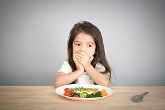

.png)
ISI NUTRISI KITA
🩺Risiko Kesehatan Berdasarkan Kategori IMT

🔹 Underweight (IMT < 18,5 kg/m²)
Risiko:
✅ Kekurangan gizi dan energi
✅ Osteoporosis dan risiko patah tulang lebih tinggi (Flegal et al., 2007)
✅ Gangguan sistem kekebalan tubuh (Golubnitschaja et al., 2021)
✅ Risiko anemia dan kelelahan kronis (Al Kibria et al., 2019)
✅ Gangguan kesuburan dan siklus menstruasi tidak teratur pada wanita (Rawal et al., 2018)
🔹 Normal Weight (IMT 18,5 – 24,9 kg/m²)
📌 Status gizi ideal dengan risiko kesehatan paling minimal jika diiringi dengan gaya hidup sehat.
Namun, menurut penelitian:
⚠ Beberapa individu dengan IMT normal masih berisiko mengalami sindrom metabolik jika memiliki lemak viseral tinggi (Van Itallie, 1985).
⚠ IMT normal tidak selalu berarti sehat, penting untuk memperhatikan komposisi tubuh (Golubnitschaja et al., 2021).
🔹 Overweight (IMT 25,0 – 29,9 kg/m²)
Risiko:
🚨 Meningkatkan risiko hipertensi (Flegal et al., 2005)
🚨 Resistensi insulin yang dapat berkembang menjadi diabetes tipe 2 (Little et al., 2016)
🚨 Peningkatan kadar kolesterol jahat (LDL) dan risiko penyakit jantung (Ringbäck Weitoft et al., 2008)
🚨 Masalah sendi dan nyeri lutut karena beban tubuh yang meningkat (Hu, 2003)
📌 Namun, menurut Katzmarzyk et al. (2001), overweight tidak selalu berisiko tinggi jika disertai aktivitas fisik yang cukup dan distribusi lemak tubuh yang baik.
🔹 Obesitas Kelas 1 (IMT 30,0 – 34,9 kg/m²)
Risiko:
⚠ Risiko tinggi terkena diabetes tipe 2 (Aronne, 2002)
⚠ Tekanan darah tinggi dan stroke (Borrell & Samuel, 2014)
⚠ Risiko lebih besar mengalami sleep apnea (Flegal et al., 2014)
⚠ Risiko terkena gangguan hormon dan kesuburan (Pasco et al., 2014)
🔹 Obesitas Kelas 2 (IMT 35,0 – 39,9 kg/m²)
Risiko:
🚨 Peningkatan risiko serangan jantung dan gagal jantung (Van Itallie, 1985)
🚨 Gangguan hati berlemak (Fatty Liver Disease) akibat akumulasi lemak berlebih di hati (Golubnitschaja et al., 2021)
🚨 Risiko lebih tinggi terkena kanker payudara dan usus (Rawal et al., 2018)
🚨 Masalah psikologis seperti depresi dan kecemasan (Farhat et al., 2010)
🔹 Obesitas Kelas 3 (IMT ≥ 40,0 kg/m²) – Obesitas Parah
Risiko:
🔥 Tingkat kematian lebih tinggi akibat penyakit kardiovaskular (Flegal et al., 2007)
🔥 Gangguan pernapasan parah, termasuk sleep apnea berat (Moser et al., 2019)
🔥 Masalah mobilitas ekstrem yang menghambat aktivitas sehari-hari (Katzmarzyk et al., 2001)
🔥 Risiko kanker lebih tinggi, termasuk kanker pankreas dan hati (Hu, 2003)
🔥 Penurunan harapan hidup hingga 10 tahun lebih pendek dibanding individu dengan berat badan normal (Flegal et al., 2005)
Penting untuk menjaga keseimbangan gizi dan menerapkan pola hidup sehat untuk mencegah risiko kesehatan yang berhubungan dengan IMT! 💪
📖 Daftar Pustaka
📌 Aronne, L. J. (2002). Classification of obesity and assessment of obesity-related health risks. Wiley Online Library
📌 Borrell, L. N., & Samuel, L. (2014). Body mass index categories and mortality risk in US adults. American Journal of Public Health
📌 Flegal, K. M., Graubard, B. I., Williamson, D. F., & Gail, M. H. (2005). Excess deaths associated with underweight, overweight, and obesity. JAMA
📌 Flegal, K. M., Kit, B. K., & Graubard, B. I. (2014). Body mass index categories in observational studies of weight and risk of death. American Journal of Epidemiology
📌 Golubnitschaja, O., et al. (2021). Caution, “normal” BMI: health risks associated with potentially masked individual underweight—EPMA Position Paper 2021. Springer
📌 Hu, F. B. (2003). Overweight and obesity in women: health risks and consequences. Journal of Women's Health
📌 Katzmarzyk, P. T., & Bouchard, C. (2001). Underweight, overweight and obesity: relationships with mortality. Journal of Clinical Epidemiology
📌 Little, M., Humphries, S., Patel, K., & Dewey, C. (2016). Factors associated with BMI, underweight, overweight, and obesity. BMC Obesity
📌 Moser, J. A. S., & Galindo-Fraga, A. (2019). Underweight, overweight, and obesity as independent risk factors for hospitalization in adults and children from influenza and other respiratory viruses. Wiley